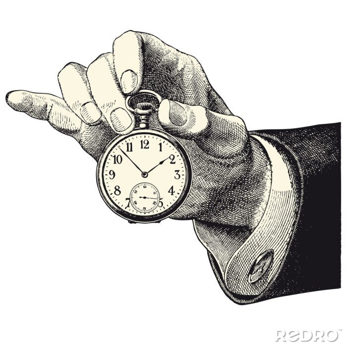

-Faire 3 repas par jour (+ une collation si nécessaire)
-Eviter les grignotages entre les repas. Il est préférable de prendre une collation équilibrée si nécessaire.
-Le repas doit durer environ 30 minutes
-Prendre le temps de manger et bien mastiquer
-Boire de l’eau à tout les repas
Le pain peut accompagner vos repas. La portion de pain par repas est aux alentours de 40grammes.
